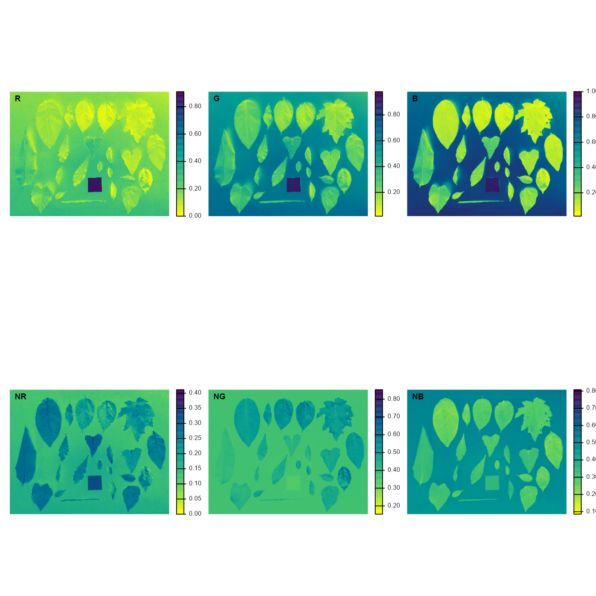
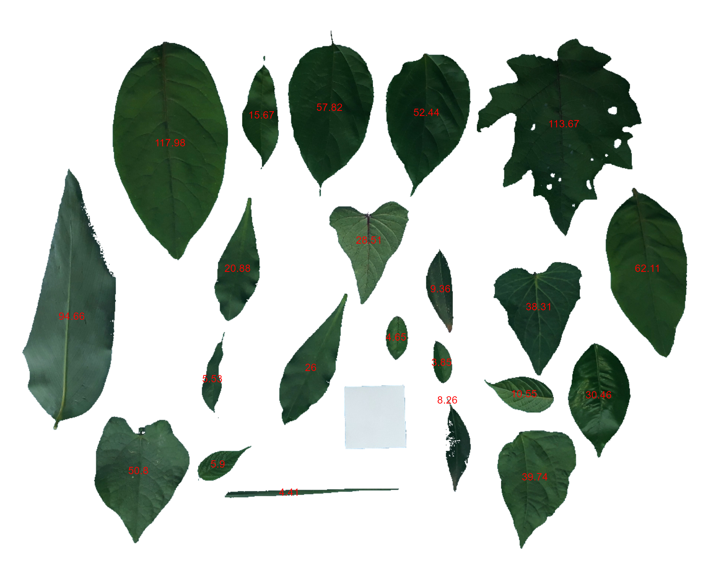

Measure leaf area using leaf images
Tiago Olivoto
2022-06-03
Source:vignettes/leaf_area.Rmd
leaf_area.RmdGetting started
We can use analyze_objects() to compute object features
such as area, perimeter, radius, etc. This can be used, for example, to
compute leaf area. Let’s compute the leaf area of leaves
with analyze_objects(). First, we use
image_segmentation() to identify candidate indexes to
segment foreground (leaves) from background.
library(pliman)
#> |==========================================================|
#> | Tools for Plant Image Analysis (pliman 1.2.0) |
#> | Author: Tiago Olivoto |
#> | Type 'citation('pliman')' to know how to cite pliman |
#> | Type 'vignette('pliman_start')' for a short tutorial |
#> | Visit 'http://bit.ly/pkg_pliman' for a complete tutorial |
#> |==========================================================|
path <- "https://raw.githubusercontent.com/TiagoOlivoto/pliman/master/vignettes/imgs"
leaves <-
image_import("leaves2.jpg",
path = path,
plot = TRUE)
image_segment(leaves, index = "all")
G (Green) and NB (Normalized Blue) are two
possible candidates to segment the leaves from the background. We will
use the NB index here (default option in
analyze_objects()). The measurement of the leaf area in
this approach can be done in two main ways: 1) using an object of known
area, and 2) knowing the image resolution in dpi (dots per inch).
Using an object of known area
- Count the number of objects (leaves in this case)
Here, we use the argument marker = "id" of the function
analyze_objects() to obtain the identification of each
object (leaf), allowing for further adjustment of the leaf area.
count <- analyze_objects(leaves, marker = "id")Note that “holes” in some leaves resulted in the segmentation of one
leaf in more than one object (e.g., 5, 8, 22, 25, 18, 28). This will not
affect the total leaf area, but the area of individual leaves and the
average leaf area. This can be solved by either setting the argument
fill_hull = TRUE or watershed = FALSE (To
don’t implement the watershed-based object segmentation). Let’s see how
much better we can go.
count <-
analyze_objects(leaves,
marker = "id",
fill_hull = TRUE)
Almost there! Due to the morphology of the leaf composed by objects 2
and 23, it was segmented into two objects. This can be solved by setting
the argument object_size = "large" that will change the
default (medium) values for tolerance and
extension arguments.
count <-
analyze_objects(leaves,
marker = "id",
fill_hull = TRUE,
object_size = "large")
When the objects are not touching each other, the argument
watershed = FALSE would be a better option.
analyze_objects(leaves,
watershed = FALSE)
And here we are! Now, all leaves were identified correctly, but all measures were given in pixel units. The next step is to convert these measures to metric units.
- Convert the leaf area by the area of the known object
The function get_measures() is used to adjust the leaf
area using object 10, a square with a side of 5 cm (25 cm\(^2\)).
area <-
get_measures(count,
id = 10,
area ~ 25)
#> -----------------------------------------
#> measures corrected with:
#> object id: 10
#> area : 25
#> -----------------------------------------
#> Total : 653.542
#> Average : 29.706
#> -----------------------------------------
area
#> id x y area area_ch perimeter radius_mean radius_min
#> 1 1 276.092 221.359 96.733 97.084 40.777 5.680 4.047
#> 2 2 911.970 191.176 93.229 118.407 59.377 5.409 3.124
#> 3 3 117.320 500.760 77.966 82.956 49.297 5.643 2.439
#> 4 4 533.623 164.162 47.427 49.289 30.448 4.036 2.891
#> 5 5 690.121 172.854 43.012 44.735 28.516 3.847 2.804
#> 6 6 224.868 751.219 41.660 44.172 28.160 3.679 2.688
#> 7 7 1047.119 424.365 50.920 51.671 30.995 4.206 2.716
#> 8 8 865.058 761.335 32.623 33.758 24.792 3.331 2.377
#> 9 9 871.465 486.611 31.446 33.853 25.829 3.253 2.207
#> 11 11 606.064 664.150 20.515 20.413 18.093 2.569 2.176
#> 12 12 597.368 378.910 23.383 26.419 23.527 2.847 1.788
#> 13 13 503.671 584.431 21.367 22.473 24.742 3.118 1.464
#> 14 14 385.428 423.933 17.144 18.196 21.724 2.710 1.317
#> 15 15 423.385 176.413 12.869 13.490 17.615 2.261 1.081
#> 16 16 847.044 626.804 8.665 9.035 13.207 1.761 1.135
#> 17 17 712.490 457.606 7.683 7.718 13.944 1.792 0.723
#> 18 18 353.545 740.339 4.868 5.282 11.113 1.425 0.803
#> 19 19 641.414 535.379 3.813 3.760 7.981 1.101 0.749
#> 20 20 738.928 711.737 6.855 0.010 0.640 0.085 0.015
#> 21 21 344.663 602.140 4.558 5.213 13.618 1.613 0.248
#> 22 22 714.281 575.989 3.162 3.108 7.562 1.034 0.574
#> 23 23 473.920 785.710 3.646 3.913 26.281 3.214 0.122
#> radius_max radius_sd diam_mean diam_min diam_max major_axis minor_axis
#> 1 8.435 1.236 11.360 8.094 16.871 15.062 8.228
#> 2 7.804 0.941 10.818 6.248 15.608 12.412 10.392
#> 3 9.664 2.129 11.286 4.877 19.327 17.224 6.065
#> 4 6.103 0.791 8.072 5.783 12.205 9.993 6.126
#> 5 5.805 0.766 7.694 5.608 11.609 9.271 6.024
#> 6 5.321 0.531 7.358 5.376 10.643 8.241 6.757
#> 7 6.482 1.078 8.412 5.432 12.964 11.494 5.713
#> 8 5.009 0.648 6.661 4.754 10.018 8.017 5.398
#> 9 4.866 0.665 6.505 4.413 9.731 7.655 5.936
#> 11 3.167 0.280 5.138 4.352 6.334 5.313 5.145
#> 12 4.507 0.693 5.695 3.575 9.015 6.845 5.286
#> 13 5.409 1.201 6.235 2.928 10.817 9.068 3.146
#> 14 4.656 1.014 5.420 2.635 9.313 7.965 2.872
#> 15 3.831 0.787 4.522 2.162 7.663 6.702 2.522
#> 16 2.774 0.469 3.521 2.269 5.548 4.570 2.464
#> 17 3.101 0.681 3.584 1.446 6.203 5.540 1.841
#> 18 2.468 0.463 2.849 1.605 4.935 3.707 1.754
#> 19 1.649 0.260 2.202 1.498 3.298 3.073 1.583
#> 20 0.157 0.045 0.171 0.030 0.314 5.636 1.675
#> 21 3.019 0.778 3.226 0.497 6.039 5.158 1.263
#> 22 1.599 0.301 2.069 1.148 3.199 3.035 1.342
#> 23 6.415 1.843 6.429 0.244 12.829 13.172 0.403
#> length width radius_ratio eccentricity theta solidity convexity elongation
#> 1 16.036 8.463 2.084 0.394 1.529 0.996 0.907 0.472
#> 2 14.339 12.054 2.498 0.833 -1.556 0.787 0.634 0.159
#> 3 19.176 6.617 3.963 0.151 -1.510 0.940 0.828 0.655
#> 4 11.575 6.333 2.111 0.389 -1.487 0.962 0.854 0.453
#> 5 10.640 6.215 2.070 0.422 -1.393 0.961 0.902 0.416
#> 6 9.205 6.902 1.980 0.630 -1.474 0.943 0.887 0.250
#> 7 12.655 5.908 2.387 0.314 1.404 0.985 0.881 0.533
#> 8 8.973 5.661 2.107 0.456 -1.328 0.966 0.834 0.369
#> 9 8.406 6.384 2.205 0.594 -1.476 0.929 0.833 0.241
#> 11 4.826 4.694 1.455 0.953 1.559 1.005 0.856 0.027
#> 12 7.745 5.765 2.521 0.541 -1.418 0.885 0.829 0.256
#> 13 10.613 3.479 3.695 0.123 -1.104 0.951 0.877 0.672
#> 14 9.160 3.160 3.535 0.143 -1.383 0.942 0.892 0.655
#> 15 7.636 2.644 3.544 0.173 1.555 0.954 0.882 0.654
#> 16 5.278 2.516 2.445 0.294 0.239 0.959 0.918 0.523
#> 17 6.141 1.915 4.289 0.140 1.427 0.995 0.804 0.688
#> 18 4.600 1.812 3.074 0.176 -0.513 0.922 0.701 0.606
#> 19 3.186 1.606 2.202 0.382 -1.544 1.014 0.889 0.496
#> 20 0.305 0.042 10.593 0.022 1.554 663.000 0.531 0.864
#> 21 5.913 1.405 12.152 0.063 -1.425 0.874 0.621 0.762
#> 22 3.140 1.364 2.787 0.270 1.421 1.017 0.913 0.566
#> 23 12.746 0.443 52.685 0.001 -0.036 0.932 0.705 0.965
#> circularity circularity_haralick circularity_norm asm con cor var
#> 1 17.189 4.596 1.379 0.320 0.313 0.643 1.438
#> 2 37.817 5.750 3.048 0.206 0.396 0.692 1.643
#> 3 31.170 2.650 2.512 0.080 0.679 0.905 4.566
#> 4 19.547 5.105 1.577 0.211 0.472 0.666 1.706
#> 5 18.905 5.022 1.524 0.188 0.503 0.748 1.997
#> 6 19.035 6.929 1.535 0.080 0.849 0.794 3.056
#> 7 18.867 3.900 1.519 0.258 0.297 0.759 1.615
#> 8 18.841 5.139 1.522 0.132 0.684 0.663 2.015
#> 9 21.216 4.890 1.716 0.182 0.739 0.607 1.939
#> 11 15.958 9.167 1.296 0.648 0.664 0.380 1.536
#> 12 23.672 4.107 1.921 0.047 3.055 0.525 4.213
#> 13 28.652 2.596 2.332 0.169 0.482 0.805 2.238
#> 14 27.529 2.674 2.248 0.139 0.491 0.834 2.478
#> 15 24.112 2.873 1.973 0.109 0.503 0.828 2.464
#> 16 20.130 3.757 1.652 0.036 3.991 0.707 7.819
#> 17 25.307 2.633 2.091 0.080 1.540 0.788 4.638
#> 18 25.370 3.076 2.115 0.055 3.113 0.287 3.183
#> 19 16.705 4.240 1.386 0.086 1.382 0.574 2.624
#> 20 0.060 1.888 10.504 0.124 0.824 0.814 3.215
#> 21 40.685 2.074 3.446 0.206 0.488 0.599 1.609
#> 22 18.087 3.431 1.513 0.128 0.721 0.877 3.937
#> 23 189.440 1.744 17.958 0.072 1.278 0.641 2.777
#> idm sav sva sen ent dva den f12 f13
#> 1 0.866 9.386 78.435 0.611 0.716 0.313 0.274 0.274 0.451
#> 2 0.844 5.744 27.286 0.733 0.861 0.396 0.301 0.310 0.520
#> 3 0.805 16.090 237.045 1.141 1.329 0.679 0.360 0.486 0.758
#> 4 0.836 5.385 23.966 0.736 0.879 0.472 0.318 0.290 0.508
#> 5 0.828 4.937 20.543 0.807 0.960 0.503 0.329 0.333 0.564
#> 6 0.756 14.127 178.998 1.027 1.270 0.849 0.406 0.331 0.629
#> 7 0.865 8.172 57.939 0.704 0.800 0.297 0.267 0.363 0.547
#> 8 0.777 11.632 119.368 0.862 1.078 0.684 0.382 0.247 0.512
#> 9 0.779 7.605 49.621 0.778 0.978 0.739 0.385 0.198 0.440
#> 11 0.920 53.806 2857.455 0.364 0.437 0.664 0.222 0.231 0.329
#> 12 0.603 17.997 295.206 1.103 1.596 3.055 0.613 0.147 0.472
#> 13 0.832 10.840 103.891 0.869 1.009 0.482 0.319 0.398 0.628
#> 14 0.825 9.873 85.309 0.935 1.086 0.491 0.327 0.418 0.661
#> 15 0.807 7.471 48.139 0.930 1.099 0.503 0.340 0.384 0.638
#> 16 0.593 13.948 185.151 1.225 1.720 3.991 0.649 0.213 0.580
#> 17 0.752 10.154 95.391 1.078 1.365 1.540 0.464 0.356 0.668
#> 18 0.556 10.242 91.501 0.975 1.488 3.113 0.634 0.051 0.272
#> 19 0.694 11.863 124.182 0.952 1.287 1.382 0.485 0.187 0.483
#> 20 0.805 6.897 43.425 0.949 1.149 0.824 0.378 0.385 0.649
#> 21 0.818 9.721 82.896 0.724 0.879 0.488 0.332 0.232 0.454
#> 22 0.783 10.020 93.870 0.919 1.122 0.721 0.391 0.385 0.644
#> 23 0.692 12.374 135.376 0.993 1.321 1.278 0.470 0.215 0.522
# plot the area to the segmented image
image_segment(leaves, index = "NB", verbose = FALSE)
plot_measures(area,
measure = "area",
col = "red") # default is "white"
knowing the image resolution in dpi (dots per inch)
When the image resolution is known, the measures in pixels obtained
with analyze_objects() are corrected by the image
resolution. The function dpi() can be used to compute the
dpi of an image, provided that the size of any object is known. See the
dpi section for more details. In this case, the
estimated resolution considering the calibration of object 10 was ~50.8
DPIs. We inform this value in the dpi argument of
get_measures().
area2 <- get_measures(count, dpi = 50.8)
# compute the difference between the two methods
sum(area$area - area2$area)
#> Warning in area$area - area2$area: longer object length is not a multiple of
#> shorter object length
#> [1] -70.009